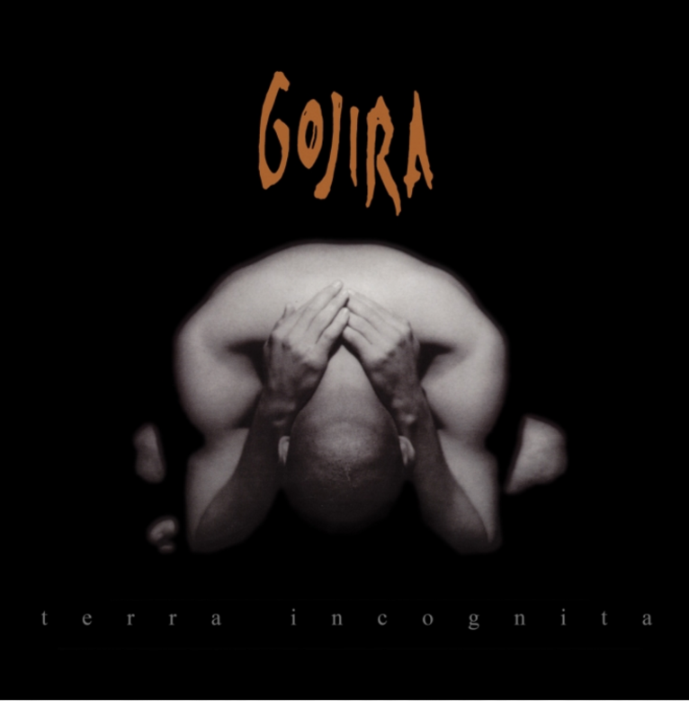

Su álbum debut, salió al mercado ya bajo el nuevo nombre de la banda; la cual formó parte de los grandes principios del metal progresivo. Aunque ellos en un principio estaban decididos a hacer death metal revolucionó el metal progresivo creando nuevas melodías.
- Terra Incognita - Lawyer talks, he's so correct, he is respect He learned how to make you feel safe And kill you with a smile And the food so fast, the hair so clean The moon so far, fire so weak All those words flying in the air Cannot see the stars Images, colors, like wrong perfection Wash my brain, dirty it's so clean But who are you? The mixture has no smell Soon you will sit on the bench Of those who deny I have my soul You sell a dream you create Condemned by what you condemned before Smooth are the words you sing down and high Underground is your joy your laws Satan is a lawyer You choose the appeerance of the futile Trapped, a coner stops your back, you're out Before you grow you will die...